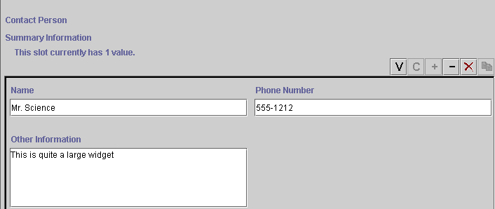

The ContainsWidget is an optional widget for slots of type Instance. The default widget, InstanceFieldWidget or InstanceListWidget, shows the name of the Instance(s) that are selected as the value of the slot. The ContainsWidget actually contains a version of the form for each instance that is a value of the slot.
A ContainsWidget is useful primarily for a Class or Instance slot where the form for the Allowed Classes is fairly simple, and where the cardinality is single or small. For a widget that provides a summary of selected fields, see the InstanceRowWidget or the InstanceTableWidget.

To make a ContainsWidget, first select the widget you want to change, then select ContainsWidget from the Widget Type Menu.
Next: SliderWidget